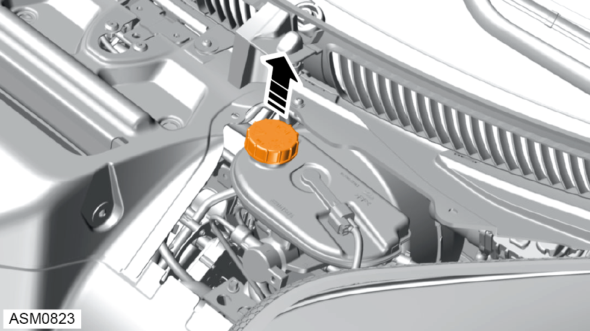
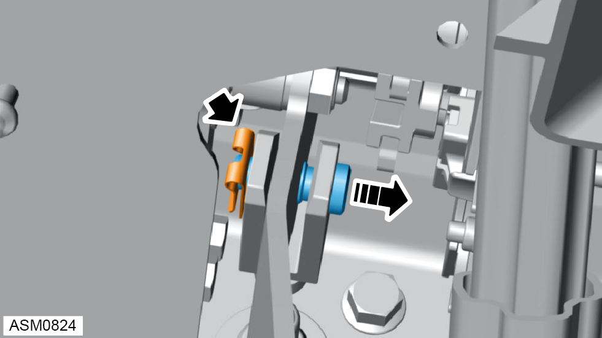

Clutch Master Cylinder - V6
Print
Operation Code: 47.01.07-02
Removal
- Remove radiator duct outlet duct. Refer to procedure.

- Remove brake fluid reservoir cap.
- Use hose clamp on clutch master cylinder hose to minimise fluid loss.
- Disengage hose clamp and remove hose from clutch master cylinder.
NOTE: Components not shown for clarity.
- Disengage quick connector and remove clutch pipe from clutch master cylinder.

- Remove clip and pin securing clutch master cylinder to clutch pedal.
- Remove M8x30 bolts (x2) securing clutch master cylinder to vehicle. Torque 25 Nm.
NOTE: Install spanner to M8 nuts (x2) fitted to bolts from pedal box side.
- Remove clutch master cylinder.
NOTE: Components not shown for clarity.
Note: Spacer and gasket are fitted behind clutch master cylinder which may drop down during removal.
Installation
- Installation is reverse of removal procedure except for the following:
- Bleed clutch.
- Check and top up brake fluid level.